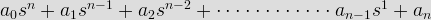
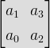
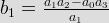
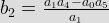
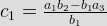
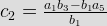

Hurwitz Criterion
With the help of characteristic equation, we will make a number of Hurwitz determinants in order to find out the stability of the system. We define characteristic equation of the system as

Now there are n determinants for nth order characteristic equation.
Let us see how we can write determinants from the coefficients of the characteristic equation. The step by step procedure for kth order characteristic equation is written below:

Here number of elements in each row is equal to determinant number and we have determinant number here is two. The first row consists of first two odd coefficients and second row consists of first two even coefficients.
![\begin{bmatrix} a_1 & a_3 & a_5\\[0.3em] a_0 & a_2 & a_4\\[0.3em] 0 & a_1 & a_3 \end{bmatrix}](3.png "\begin{bmatrix} a_1 & a_3 & a_5\\[0.3em] a_0 & a_2 & a_4\\[0.3em] 0 & a_1 & a_3 \end{bmatrix}")
Here number of elements in each row is equal to determinant number and we have determinant number here is three. The first row consists of first three odd coefficients, second row consists of first three even coefficients and third row consists of first element as zero and rest of two elements as first two odd coefficients.
![\begin{bmatrix} a_1 & a_3 & a_5 & a_7\\[0.3em] a_0 & a_2 & a_4 & a_6\\[0.3em] 0 & a_1 & a_3 & a_5\\[0.3em] 0 & a_0 & a_2 & a_4 \end{bmatrix}](4.png "\begin{bmatrix} a_1 & a_3 & a_5 & a_7\\[0.3em] a_0 & a_2 & a_4 & a_6\\[0.3em] 0 & a_1 & a_3 & a_5\\[0.3em] 0 & a_0 & a_2 & a_4 \end{bmatrix}")
Here number of elements in each row is equal to determinant number and we have determinant number here is four. The first row consists of first three four coefficients, second row consists of first four even coefficients, third row consists of first element as zero and rest of three elements as first three odd coefficients the fourth row consists of first element as zero and rest of three elements as first three even coefficients.
By following the same procedure we can generalize the determinant formation. The general form of determinant is given below:
![\begin{bmatrix} a_1 & a_3 & a_5 & a_7&\cdot&\cdot&\cdot& a_{2k-1}\\[0.3em] a_0 & a_2 & a_4 & a_6&\cdot&\cdot&\cdot &a_{2k-2}\\[0.3em] 0 & a_1 & a_3 & a_5&\cdot&\cdot&\cdot &a_{2k-3}\\[0.3em] 0 & a_0 & a_2 & a_4&\cdot&\cdot&\cdot &a_{2k-4}\\[0.3em] \cdot&\cdot&\cdot&\cdot&\cdot&\cdot&\cdot&\cdot\\[0.3em]\cdot&\cdot&\cdot&\cdot&\cdot&\cdot&\cdot&\cdot\\[0.3em]\cdot&\cdot&\cdot&\cdot&\cdot&\cdot&\cdot&\cdot\\[0.3em]0&0&0&0&\cdot&\cdot&\cdot&ak \end{bmatrix}](5.png "\begin{bmatrix} a_1 & a_3 & a_5 & a_7&\cdot&\cdot&\cdot& a_{2k-1}\\[0.3em] a_0 & a_2 & a_4 & a_6&\cdot&\cdot&\cdot &a_{2k-2}\\[0.3em] 0 & a_1 & a_3 & a_5&\cdot&\cdot&\cdot &a_{2k-3}\\[0.3em] 0 & a_0 & a_2 & a_4&\cdot&\cdot&\cdot &a_{2k-4}\\[0.3em] \cdot&\cdot&\cdot&\cdot&\cdot&\cdot&\cdot&\cdot\\[0.3em]\cdot&\cdot&\cdot&\cdot&\cdot&\cdot&\cdot&\cdot\\[0.3em]\cdot&\cdot&\cdot&\cdot&\cdot&\cdot&\cdot&\cdot\\[0.3em]0&0&0&0&\cdot&\cdot&\cdot&ak \end{bmatrix}")
Now in order to check the stability of the above system, calculate the value of each determinant. The system will be stable if and only if the value of each determinant is greater than zero, i.e. the value of each determinant should be positive. In all the other cases the system will not be stable.
Routh Stability Criterion
This criterion is also known as modified Hurwitz Criterion of stability of the system. We will study this criterion in two parts. Part one will cover necessary condition for stability of the system and part two will cover the sufficient condition for the stability of the system. Let us again consider the characteristic equation of the system as
1) Part one (necessary condition for stability of the system): In this we have two conditions which are written below:
(a) All the coefficients of the characteristic equation should be positive and real.
(b) All the coefficients of the characteristic equation should be non zero.
2)Part two (sufficient condition for stability of the system): Let us first construct routh array. In order to construct the routh array follow these steps:
(a) The first row will consist of all the even terms of the characteristic equation. Arrange them from first (even term) to last (even term). The first row is written below: a0 a2 a4 a6............
(b) The second row will consist of all the odd terms of the characteristic equation. Arrange them from first (odd term) to last (odd term). The first row is written below: a1 a3 a5 a7...........
(c) The elements of third row can be calculated as:
(1) First element : Multiply a0 with the diagonally opposite element of next column (i.e. a3) then subtract this from the product of a1 and a2 (where a2 is diagonally opposite element of next column) and then finally divide the result so obtain with a1. Mathematically we write as first element

(2) Second element : Multiply a0 with the diagonally opposite element of next to next column (i.e. a5) then subtract this from the product of a1 and a4 (where a4 is diagonally opposite element of next to next column) and then finally divide the result so obtain with a1. Mathematically we write as second element

Similarly, we can calculate all the elements of the third row.
(d) The elements of fourth row can be calculated by using the following procedure:
(1) First element : Multiply b1 with the diagonally opposite element of next column (i.e. a3) then subtract this from the product of a1 and b2 (where b2 is diagonally opposite element of next column) and then finally divide the result so obtain with b1. Mathematically we write as first element

(2) Second element :Multiply b1 with the diagonally opposite element of next to next column (i.e. a5) then subtract this from the product of a1 and b3 (where b3 is diagonally opposite element of next to next column) and then finally divide the result so obtain with a1. Mathematically we write as second element

Similarly, we can calculate all the elements of the fourth row.
Similarly, we can calculate all the elements of all the rows.
Stability criteria if all the elements of the first column are positive then the system will be stable. However if anyone of them is negative the system will be unstable.
Now there are some special cases related to Routh Stability Criteria which are discussed below:
(1) Case one: If the first term in any row of the array is zero while the rest of the row has at least one non zero term.
In this case we will assume a very small value (ε) which is tending to zero in place of zero. By replacing zero with (ε) we will calculate all the elements of the Routh array. After calculating all the elements we will apply the limit at each element containing (ε). On solving the limit at every element if we will get positive limiting value then we will say the given system is stable otherwise in all the other condition we will say the given system is not stable.
(2) Case second : When all the elements of any row of the Routh array are zero. In this case we can say the system has the symptoms of marginal stability. Let us first understand the physical meaning of having all the elements zero of any row. The physical meaning is that there are symmetrically located roots of the characteristic equation in the s plane. Now in order to find out the stability in this case we will first find out auxiliary equation. Auxiliary equation can be formed by using the elements of the row just above the row of zeros in the Routh array. After finding the auxiliary equation we will differentiate the auxiliary equation to obtain elements of the zero row. If there is no sign change in the new routh array formed by using auxiliary equation, then in this we say the given system is limited stable. While in all the other cases we will say the given system is unstable.
 by
by